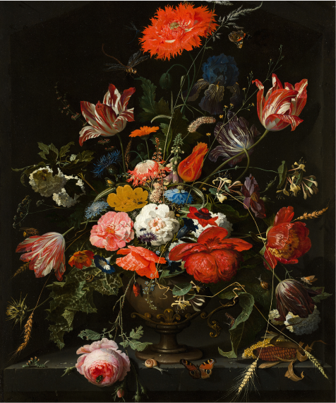

For augneblinken har desse kunstnarane utstilling:
Kunstner fra Åndalsnes som maler fargerrike oljemålerier med botaniske elementer.
Solveig er inspirert av Sunnmørsalpene hun har vokst opp rett ved.
Monika fra Ørsta maler stemningsfulle målerier med mennesker i fokus.
Jostein eksperimenterer med farger og former. Dette er 3. gang vi har bildene hans inne.